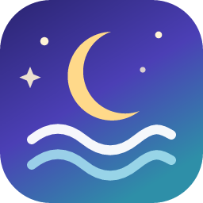

Relaxation StationPrivacy Policy
Effective October 28, 2026
The short version: Relaxation Station collects no data at all. It has no accounts, no servers, no ads, no analytics and no tracking. All of its meditations and sounds are built into the app, so it never needs to connect to the internet.
Who this policy covers
Relaxation Station is an iPhone and Android app made by Preston Davies, an independent developer. This policy explains how the app handles your information. If you have questions, email preston5@protonmail.com.
What the app collects
Nothing. The app does not ask for your name, email, location or any other personal information. It does not record what you listen to, and it does not send anything from your phone to the developer or to anyone else.
Offline by design
Every guided meditation and soundscape is stored inside the app when you install it. The app works the same in airplane mode. It does not download content, check for updates on its own, or contact any server. App updates come only through the App Store or Google Play.
Permissions
- Background audio. The app keeps playing when your screen is locked or you switch apps, so you can fall asleep to a sound. This uses your phone's standard media playback controls.
- Notifications (Android only). Android shows a playback notification with pause and stop buttons while audio is playing. The app does not send any other notifications.
The app does not use your microphone, camera, contacts, photos or location.
App stores
Apple and Google may collect information when you download the app, such as crash reports you have chosen to share with developers. Their own privacy policies cover that. The developer does not receive any information that identifies you.
Children
The app is suitable for all ages and collects no information from anyone, including children.
Health information
The meditations are for relaxation and general wellbeing. They are not medical advice, diagnosis or treatment. If you are dealing with a mental health or medical condition, please talk to a qualified professional.
Keeping and deleting data
The app collects nothing, so there is nothing to keep, share, delete or withdraw consent for. It stores no history of what you play. Deleting the app removes it and everything it contains from your phone.
Changes to this policy
If this policy changes, I will update this page and its effective date.
Contact
Email preston5@protonmail.com with any privacy questions.